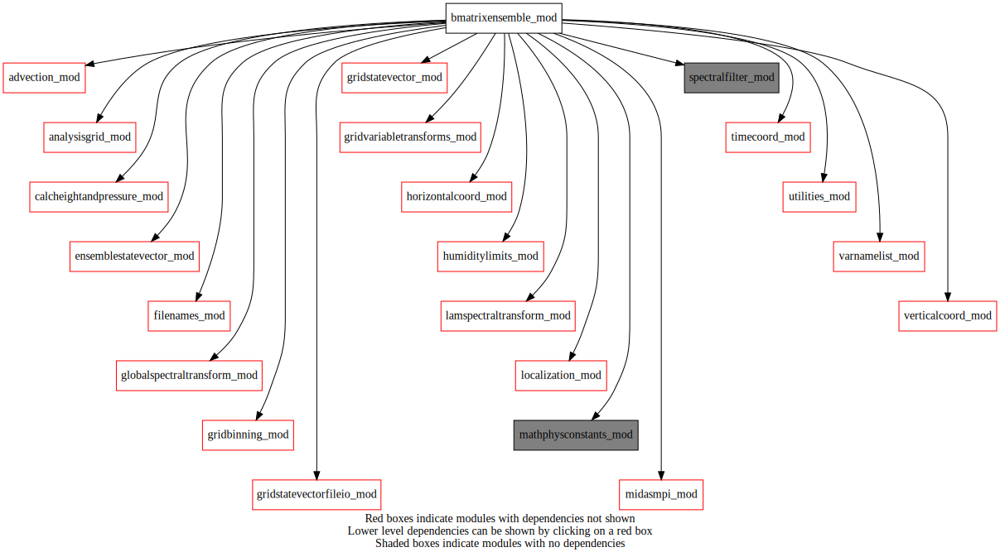
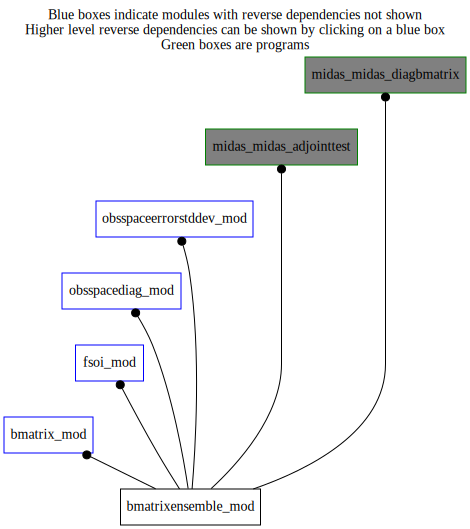

Dependency Diagrams:
 Direct Dependency Diagram¶
 Reverse Dependency Diagram¶
Description
MODULE BmatrixEnsemble_mod (prefix=’ben’ category=’2. B and R matrices’)
- Purpose
Performs transformation from control vector to analysis increment using the spatially localized ensemble covariance matrix. This module works for both global and limited-area applications.
Quick access
- Routines
addensmember(),addensmemberad(),ben_bsqrt(),ben_bsqrtad(),ben_expandtompiglobal(),ben_expandtompiglobal_r4(),ben_finalize(),ben_getamp3dstepindexassimwindow(),ben_getamplitudeassimwindow(),ben_getensmean(),ben_getloc(),ben_getnens(),ben_getnuminstance(),ben_getnumloc(),ben_getnumstepamplitudeassimwindow(),ben_getperturbation(),ben_getscalefactor(),ben_reducetompilocal(),ben_reducetompilocal_r4(),ben_setfsoleadtime(),ben_setinstanceindex(),ben_setup(),ben_setuponeinstance(),ben_writeamplitude(),ensemblediagnostic(),ensemblescaledecomposition(),setupensemble()Needed modules
midasmpi_mod: MODULE midasMpi_mod (prefix=’mmpi’ category=’8. Low-level utilities and constants’)
filenames_mod: MODULE fileNames_mod (prefix=’fln’ category=’7. Low-level data objects’)
gridstatevector_mod: MODULE gridStateVector_mod (prefix=’gsv’ category=’6. High-level data objects’)
gridstatevectorfileio_mod: MODULE gridStateVectorFile_mod (prefix=’gio’ category=’4. Data Object transformations’)
ensemblestatevector_mod: MODULE ensembleStateVector_mod (prefix=’ens’ category=’6. High-level data objects’)
horizontalcoord_mod: MODULE HorizontalCoord_mod (prefix=’hco’ category=’7. Low-level data objects’)
verticalcoord_mod: MODULE verticalcoord (prefix=’vco’ category=’7. Low-level data objects’)
timecoord_mod: MODULE timeCoord (prefix=’tim’ category=’7. Low-level data objects’)
localization_mod: MODULE localization_mod (prefix=’loc’ category=’2. B and R matrices’)
mathphysconstants_mod: MODULE MathPhysConstants_mod (prefix=’mpc’ category=’8. Low-level utilities and constants’)
gridvariabletransforms_mod: MODULE gridVariableTransforms (prefix=’gvt’ category=’4. Data Object transformations’)
utilities_mod: MODULE utilities_mod (prefix=’utl’ category=’8. Low-level utilities and constants’)
globalspectraltransform_mod: MODULE globalSpectralTransform_mod (prefix=’gst’ category=’4. Data Object transformations’)
lamspectraltransform_mod: MODULE lamSpectralTransform_mod (prefix=’lst’ category=’4. Data Object transformations’)
spectralfilter_mod: MODULE spectralFilter_mod (prefix=’spf’ category=’8. Low-level utilities and constants’)
varnamelist_mod: MODULE varNameList (prefix=’vnl’ category=’7. Low-level data objects’)
advection_mod: MODULE advection_mod (prefix=”adv” category=’4. Data Object transformations’)
gridbinning_mod: MODULE gridBinning_mod (prefix=’gbi’ category=’4. Data Object transformations’)
humiditylimits_mod: MODULE humidityLimits_mod (prefix=’qlim’ category=’4. Data Object transformations’)
analysisgrid_mod: MODULE analysisGrid_mod (prefix=’agd’ category=’7. Low-level data objects’)
calcheightandpressure_mod: MODULE czp_calcHeightAndPressure (prefix=’czp’ category=’4. Data Object transformations’)Types
- type bmatrixensemble_mod/unknown_type¶
- Type fields
% adv_amplitudeassimwindow [struct_adv ,pointer]
% adv_amplitudefsofcst [struct_adv ]
% adv_analinc [struct_adv ]
% adv_ensperts [struct_adv ]
% advdiagnostic [logical ]
% advectamplitudeassimwindow [logical ]
% advectamplitudefsofcst [logical ]
% advectenspertanlinc [logical ]
% advectfactorassimwindow (vco_maxnumlevels) [real ]
% advectfactorfsofcst (vco_maxnumlevels) [real ]
% advectstarttimeindexassimwindow [character ]
% advecttypeassimwindow [character ]
% amp3dstepindexassimwindow [integer ]
% amp3dstepindexfsofcst [integer ]
% ctrlvarhumidity [character ]
% cvdim_mpiglobal [integer ]
% cvdim_mpilocal [integer ]
% datestamplist (*) [integer ,allocatable]
% datestamplistadvectedfields (*) [integer ,allocatable]
% ensamplitudestorage [struct_ens ]
% enscontainsfullfield [logical ]
% ensdateofvalidity [integer ]
% ensdiagnostic [logical ]
% enspathname [character ]
% ensperts (*) [struct_ens ,allocatable]
% enspertsnormalized [logical ]
% ensshouldnotcontainlqvarname [logical ]
% footprintradius [real ]
% footprinttopothreshold [real ]
% fsoleadtime [real ]
% gsvhucontainslq [logical ]
% hco_core [struct_hco ,pointer]
% hco_ens [struct_hco ,pointer]
% hco_file [struct_hco ,pointer]
% hinterpolationdegree [character ]
% hlocalize (maxnumlocallength) [real ]
% huminvalue [real ]
% includeanlvar (vnl_numvarmax) [character ]
% initialized [logical ]
% keepamplitude [logical ]
% localizationtype [character ]
% locstorage (*) [struct_loc ,pointer]
% mylatbeg [integer ]
% mylatend [integer ]
% mylonbeg [integer ]
% mylonend [integer ]
% nens [integer ]
% nensoverdimension [integer ]
% ni [integer ]
% nj [integer ]
% nlevens_dp [integer ]
% nlevens_m [integer ]
% nlevens_t [integer ]
% nlevinc_dp [integer ]
% nlevinc_m [integer ]
% nlevinc_t [integer ]
% ntrunc [integer ]
% null [struct_vco ,pointer]
% numincludeanlvar [integer ]
% numstep [integer ]
% numstepadvectassimwindow [integer ]
% numstepadvectfsofcst [integer ]
% numstepamplitudeassimwindow [integer ]
% numstepamplitudefsofcst [integer ]
% numstepassimwindow [integer ]
% numsubens [integer ]
% nwaveband [integer ]
% nwavebandforfiltering [integer ]
% removesubensmeans [logical ]
% scalefactor (vco_maxnumlevels) [real ]
% scalefactor_dp (*) [real ,allocatable]
% scalefactor_m (*) [real ,allocatable]
% scalefactor_sf [real ]
% scalefactor_t (*) [real ,allocatable]
% scalefactorhumidity (vco_maxnumlevels) [real ]
% statevector_ensstddev [struct_gsv ]
% toplevindex_dp [integer ]
% toplevindex_m [integer ]
% toplevindex_t [integer ]
% transformvarkindch [character ]
% usecmatrixonly [logical ]
% usesaveamp [logical ]
% variancesmoothing [character ]
% varnamealfa (1) [character ]
% vco_anl [struct_vco ,pointer]
% vco_ens [struct_vco ,pointer]
% vco_file [struct_vco ,pointer]
% vlocalize (maxnumlocallength) [real ]
% wavebandindexselected [integer ]
% wavebandpeaks (maxnumlocallength) [integer ]
Variables
Subroutines and functions
- subroutine bmatrixensemble_mod/ben_setup(hco_anl_in, hco_core_in, vco_anl_in, cvdimperinstance[, mode_opt])¶
- Purpose
To configure the ensemble B matrix
- Arguments
hco_anl_in [struct_hco ,in,pointer]
hco_core_in [struct_hco ,in,pointer]
vco_anl_in [struct_vco ,in,pointer]
cvdimperinstance (*) [integer ,out,allocatable]
- Options
mode_opt [character ,in,]
- Called from
bmat_setup(),ose_compute_hbht_ensemble(),midas_adjointtest- Call to
utl_tmg_start(),utl_abort(),gsv_varexist(),agd_setupfromhco(),ben_setuponeinstance(),utl_tmg_stop()
- subroutine bmatrixensemble_mod/ben_setuponeinstance(instanceindex, cvdim)¶
- Purpose
To configure a single instance of the ensemble B matrix
- Arguments
instanceindex [integer ,in]
cvdim [integer ,out]
- Called from
- Call to
utl_abort(),tim_getdatestamp(),tim_getstamplist(),fln_ensfilename(),vco_setupfromfile(),vco_mpibcast(),vco_subsetornot(),vco_deallocate(),mmpi_setup_latbands(),mmpi_setup_lonbands(),mmpi_setup_levels(),loc_setup(),gsv_varexist(),setupensemble(),ens_computestddev(),ens_normalize(),ens_copyensstddev(),gio_writetofile(),gsv_power(),gbi_setup(),gbi_deallocate(),gsv_smoothhorizontal(),gsv_getheightsfc(),utl_tmg_start(),adv_setup(),utl_tmg_stop(),gsv_allocate(),ens_copyensmean(),gsv_deallocate(),ens_copymember(),adv_ensemble_tl(),ensemblediagnostic(),ensemblescaledecomposition(),ens_allocate(),ens_zero()
- subroutine bmatrixensemble_mod/ben_finalize()¶
- Called from
- Call to
- subroutine bmatrixensemble_mod/ben_getscalefactor(scalefactor_out[, instanceindex_opt])¶
- Arguments
scalefactor_out (*) [real ,out]
- Options
instanceindex_opt [integer ,in,]
- Called from
- Call to
- function bmatrixensemble_mod/ben_setinstanceindex([instanceindex_opt])¶
- Purpose
To return the appropriate instance index
- Options
instanceindex_opt [integer ]
- Return
instanceindex [integer ]
- Called from
ben_getscalefactor(),ben_getnens(),ben_getperturbation(),ben_getensmean(),ben_writeamplitude(),ben_setfsoleadtime(),ben_getnumstepamplitudeassimwindow(),ben_getamplitudeassimwindow(),ben_getamp3dstepindexassimwindow(),ben_getnumloc(),ben_getloc()
- function bmatrixensemble_mod/ben_getnens([instanceindex_opt])¶
- Purpose
To return the number of ensemble members
- Options
instanceindex_opt [integer ,in,]
- Return
ben_getnens [integer ]
- Called from
- Call to
- subroutine bmatrixensemble_mod/setupensemble(instanceindex)¶
- Arguments
instanceindex [integer ,in]
- Called from
- Call to
ens_allocate(),ens_readensemble(),ens_varexist(),vnl_varkindfromvarname(),ens_computemean(),ens_removemean(),ens_getnumk(),ens_getvarnamefromk(),ens_getlevfromk(),ens_getonelev_r4(),vnl_varlevelfromvarname(),utl_abort()
- subroutine bmatrixensemble_mod/ben_getperturbation(statevector, memberindexwanted, upwardextrapolationmethod[, wavebandindexwanted_opt[, undonormalization_opt[, instanceindex_opt]]])¶
- Arguments
statevector [struct_gsv ]
memberindexwanted [integer ,in]
upwardextrapolationmethod [character ,in]
- Options
wavebandindexwanted_opt [integer ,in,]
undonormalization_opt [logical ]
instanceindex_opt [integer ,in,]
- Called from
- Call to
ben_setinstanceindex(),utl_abort(),ens_getnumk(),ens_getvarnamefromk(),ens_getlevfromk(),ens_getonelev_r4(),vnl_varlevelfromvarname()
- subroutine bmatrixensemble_mod/ben_getensmean(statevector, upwardextrapolationmethod[, instanceindex_opt])¶
- Arguments
statevector [struct_gsv ]
upwardextrapolationmethod [character ,in]
- Options
instanceindex_opt [integer ,in,]
- Call to
ben_setinstanceindex(),gsv_zero(),utl_abort(),ens_getnumk(),ens_getvarnamefromk(),ens_getlevfromk(),ens_getonelevmean_r8(),vnl_varlevelfromvarname()
- subroutine bmatrixensemble_mod/ensemblescaledecomposition(instanceindex)¶
- Arguments
instanceindex [integer ,in]
- Called from
- Call to
gst_setup(),gst_getnla(),mmpi_setup_m(),mmpi_setup_n(),lst_setup(),spf_filterresponsefunction(),ens_getnumk(),ens_getonelev_r4(),gst_setid(),gst_reespe_kij(),lst_vartransform(),gst_speree_kij()
- subroutine bmatrixensemble_mod/ben_reducetompilocal(cv_mpilocal, cv_mpiglobal, instanceindex)¶
- Arguments
cv_mpilocal (bens(instanceindex)%cvdim_mpilocal) [real ,out]
cv_mpiglobal (*) [real ,in]
instanceindex [integer ,in]
- Called from
- Call to
- subroutine bmatrixensemble_mod/ben_reducetompilocal_r4(cv_mpilocal, cv_mpiglobal, instanceindex)¶
- Arguments
cv_mpilocal (bens(instanceindex)%cvdim_mpilocal) [real ,out]
cv_mpiglobal (*) [real ,in]
instanceindex [integer ,in]
- Called from
- Call to
- subroutine bmatrixensemble_mod/ben_expandtompiglobal(cv_mpilocal, cv_mpiglobal, instanceindex)¶
- Arguments
cv_mpilocal (bens(instanceindex)%cvdim_mpilocal) [real ,in]
cv_mpiglobal (*) [real ,out]
instanceindex [integer ,in]
- Called from
- Call to
- subroutine bmatrixensemble_mod/ben_expandtompiglobal_r4(cv_mpilocal, cv_mpiglobal, instanceindex)¶
- Arguments
cv_mpilocal (bens(instanceindex)%cvdim_mpilocal) [real ,in]
cv_mpiglobal (*) [real ,out]
instanceindex [integer ,in]
- Called from
- Call to
- subroutine bmatrixensemble_mod/ben_bsqrt(instanceindex, controlvector_in, statevector[, usefsofcst_opt[, statevectorref_opt]])¶
- Arguments
instanceindex [integer ,in]
controlvector_in (bens(instanceindex)%cvdim_mpilocal) [real ] :: OUT
statevector [struct_gsv ]
- Options
usefsofcst_opt [logical ]
statevectorref_opt [struct_gsv ]
- Called from
- Call to
ens_allocate(),gsv_zero(),utl_tmg_start(),loc_lsqrt(),utl_tmg_stop(),adv_ensemble_tl(),ens_copy(),addensmember(),ens_deallocate(),gsv_schurproduct(),adv_statevector_tl(),gsv_varexist()
- subroutine bmatrixensemble_mod/ben_bsqrtad(instanceindex, statevector, controlvector_out[, usefsofcst_opt[, statevectorref_opt]])¶
- Arguments
instanceindex [integer ,in]
statevector [struct_gsv ]
controlvector_out (bens(instanceindex)%cvdim_mpilocal) [real ] :: OUT
- Options
usefsofcst_opt [logical ]
statevectorref_opt [struct_gsv ]
- Called from
- Call to
gsv_varexist(),adv_statevector_ad(),gsv_schurproduct(),ens_allocate(),addensmemberad(),adv_ensemble_ad(),utl_tmg_start(),loc_lsqrtad(),utl_tmg_stop(),ens_deallocate()
- subroutine bmatrixensemble_mod/addensmember(ensamplitude, statevector_out, instanceindex, wavebandindex[, usefsofcst_opt])¶
- Arguments
ensamplitude [struct_ens ]
statevector_out [struct_gsv ]
instanceindex [integer ,in]
wavebandindex [integer ,in]
- Options
usefsofcst_opt [logical ]
- Called from
- Call to
utl_tmg_start(),ens_getnumk(),ens_getlevfromk(),ens_getvarnamefromk(),vnl_varlevelfromvarname(),ens_getonelev_r8(),utl_abort(),ens_getonelev_r4(),utl_tmg_stop(),gsv_getdatakind()
- subroutine bmatrixensemble_mod/addensmemberad(statevector_in, ensamplitude, instanceindex, wavebandindex[, usefsofcst_opt])¶
- Arguments
statevector_in [struct_gsv ]
ensamplitude [struct_ens ]
instanceindex [integer ,in]
wavebandindex [integer ,in]
- Options
usefsofcst_opt [logical ]
- Called from
- Call to
utl_tmg_start(),ens_getnumlev(),vnl_varlevelfromvarname(),ens_getonelev_r8(),ens_getnumk(),ens_getlevfromk(),ens_getvarnamefromk(),utl_abort(),gsv_getdatakind(),ens_getonelev_r4(),utl_tmg_stop()
- subroutine bmatrixensemble_mod/ensemblediagnostic(instanceindex, mode)¶
- Arguments
instanceindex [integer ,in]
mode [character ,in]
- Called from
- Call to
utl_abort(),gsv_allocate(),tim_getdatestamp(),ben_getperturbation(),gio_writetofile(),gsv_deallocate(),ens_getdatakind(),gsv_zero(),ens_copymember(),gsv_power(),gsv_add()
- subroutine bmatrixensemble_mod/ben_writeamplitude(enspathname, ensfilenameprefix, ip3[, instanceindex_opt])¶
- Arguments
enspathname [character ,in]
ensfilenameprefix [character ,in]
ip3 [integer ,in]
- Options
instanceindex_opt [integer ,in,]
- Called from
- Call to
- subroutine bmatrixensemble_mod/ben_setfsoleadtime(fsoleadtime_in[, instanceindex_opt])¶
- Arguments
fsoleadtime_in [real ]
- Options
instanceindex_opt [integer ,in,]
- Called from
- Call to
- function bmatrixensemble_mod/ben_getnumstepamplitudeassimwindow([instanceindex_opt])¶
- Options
instanceindex_opt [integer ,in,]
- Return
numstepamplitude [integer ]
- Called from
- Call to
- function bmatrixensemble_mod/ben_getamplitudeassimwindow([instanceindex_opt])¶
- Options
instanceindex_opt [integer ,in,]
- Return
adv_amplitude [struct_adv ,pointer]
- Called from
- Call to
- function bmatrixensemble_mod/ben_getamp3dstepindexassimwindow([instanceindex_opt])¶
- Options
instanceindex_opt [integer ,in,]
- Return
stepindex [integer ]
- Called from
- Call to
- function bmatrixensemble_mod/ben_getnuminstance()¶
- Return
numinstance [integer ]
- Called from
- function bmatrixensemble_mod/ben_getnumloc([instanceindex_opt])¶
- Options
instanceindex_opt [integer ,in,]
- Return
numloc [integer ]
- Called from
- Call to
- function bmatrixensemble_mod/ben_getloc(locindex[, instanceindex_opt])¶
- Arguments
locindex [integer ,in]
- Options
instanceindex_opt [integer ,in,]
- Return
loc [struct_loc ,pointer]
- Called from
- Call to
{kind=link}
{kind=link}